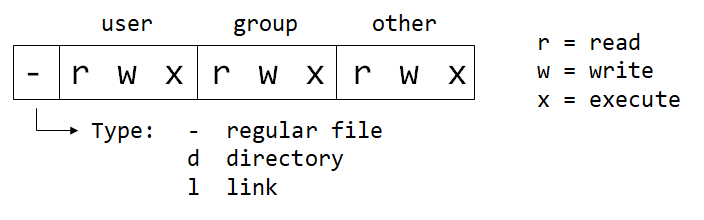

LINUX Basics
In Linux, everything is a file.
UBUNTU Shortcuts
SHIFT + ALT + T # opens Terminal
CTRL + ALT + SHIFT + K # computer shutdown (custom shortcut)
UBUNTU Folderstructure
- /bin binaries
- executable files (you can call them from terminal)
- binary (ready to run, not readable for humans)
- essential (a lot of system needed programs)
- /boot boot files
- linux kernel (/boot/vmlinuz)
- initial RAM disk image
- boot loader (GRUB -> /boot/grub/grub.conf)
- /dev device nodes
- all devices represented here as files
- /dev/sda1 (sda -> name of disk)
- usb devices / cpu / etc...
- /etc configuration files
- system-wide configuration files
- some shell scripts
- all files are human readable
- /home users folders
- each user has its own user-folder here
- private data, pictures, videos etc...
- /lib libraries
- libraries required by the programs in /bin folder
- (library is a set of functions that are shared between programs)
- /lost+found recovered files
- only exists when using ext4 file system (most linux distros use it)
- recovery folder used by the ext4 file system
- seperate folder for every ext4 partition
- empty unless something happens (used for recovery)
- /media automatic mount point
- automatic mounting of removable media such as USB drives, CD-ROM etc.
- when properly setup usb drives should appear here!
- mounting = accessing
- /mnt manual mount point
- similar to /media folder, but its usually used for manual mounting
- /opt optional software
- not essential
- often used to install commercial programs (dropbox etc.)
- /proc kernel files
- virtual file-system for the linux kernel
- not touched by a user
- /root root home
- do not mix with /
- the same as your user home directory but its for the root account!
- /run early temp
- recently introduced
- tempoirary file-system
- used early in system boot (before other temp folder become availible!)
- /sbin system binaries
- binaries
- essential
- run by the super user
- /srv service data
- service files installed on your system
- for example a http webserver
- /tmp temporary files
- temporary files
- this directory is usually cleaned on reboot
- /usr user binaries
- the largest folder after /home
- contains all programs used by a regular user (thousands of programs)
- /usr/bin binaries of programs installed by your distro
- /usr/lib libraries used by the binaries
- /usr/share/doc documentation files for programs installed on system
- /var variable files
- files that change all the time
- /var/log stores log files (that monitors processes)
Bash
some vocabulary (source: wikipedia)
A shell (unix-shell) is a command-line interpreter or shell (=Hülle) that provides a command line user interface for Unix-like operating systems. The shell is both an interactive command language and a scripting language, and is used by the operating system to control the execution of the system using shell scripts.
Bash stands for Born Again SHell and is a unix shell and command language written by Brian Fox (improved version of the shell).
Terminal (terminal emulator): programm to interact with the shell (bash).
TUI: textbased user interface (for example a terminal emulator or vim when running in a terminal).
GUI: graphical user interface -> what most users are used to.
Terminal Shortcuts
# BASICS
CTRL + L # clear terminal output
CTRL + C # stop if there is a problem
CTRL + D # close terminal
exit # closes terminal
# NAVIGATION
CTRL + A # go to start of line
CTRL + SHIFT + c # copy (CTRL+c does not work)
CTRL + SHIFT + p # paste (CTRL+v does not work)
never execute this command (dangerous!)
# never execute this command (dangerous!)
sudo rm -rF / # will force to delete root
.bashrc / .bash_aliases
# files anschauen
.profile
.bashrc
.bash_aliases
Basic Commands
# access system variables (date & time)
date # current date and time
cal # calendar of the current month
# free space & processes
free -h # RAM space -h short for --human (better readibility)
df -h # DISC space -h short for --human (better readibility)
ps # all running processes
ps faux # all running processes (more detail)
# get help
man <command> # manual (help) for <command>
# outputting strings (to console)
echo # prints to console (can take multiple parameters)
echo "hello World!" # outputs message to console
echo 'hello World!' # same (single or double quotes)
echo hello World! # same (no quotes at all -> takes multiple inputs)
eval # evaluates the command first and outputtes result as string
which COMMAND # shows the path to a given command
which java # shows path where command "java" is stored
sudo # use sudo befor calling a command when admin rights are needed
# create aliases (own small programms)
# store aliases in .bash_aliases file to load them on each start of the terminal
alias sayHello="echo 'hello World!'"; # hello World programm
alias goToHome="cd ~"; # unneccessary but possible
Navigation
# changing directory
pwd # print working directory
cd PATH # change directory (absolute or relative Path)
cd # change directory to user home folder
cd ~ # change directory to user home folder
cd / # change directory to root folder
cd .. # go one level up (to parent directory)
cd - # switches working directory to previous wd (back and forth)
~ # home folder of current user
~dcts # home folder of user "dcts"
# paths
/ # root folder
. # current directory
./ # current relative path
.. # parent directory
../ # parent relative path
# listing content
ls # lists all files and folders in the current directory
ls -a # show also all .-files (hidden)
ls -l # long format
ls -l -a # two options
ls -la # short version with two options
ls path1 path2 # ls can take also 2 inputs
ll # show also hidden files (long format)
ll path1 path2 # ll can take also 2 inputs
Manipulating Files
# creating files / folders
mkdir folder # create folder in current working directory
touch file.txt # create file
# renaming / moving around / adding content
mv file.txt Newname # rename file
mv file.txt relativePath # move file to another directory
echo "test" >> fileName # writes content (string "test") to file
cat file.txt # show content of file in console
cat > file.txt # enters writing mode and OVERWRITES or CREATS file
# end writing mode by pressing CTRL+Z
# deleting
rm -r foldername # remove folder
rm file.txt # remove file
# copying
cp <source> <target> # copy source file to target
cp file file_copy # copies "file" to "file_copy" in current directory
Searching (Find)
# findet alle jggs (überall), gibt metadaten aus und wählt nur das Feld "JFIF Version" aus!
find . -iname '*jpg' -exec exiftool {} \; | egrep "JFIF Version"
Installing Packages
What's a Package Manager?
A package manager serves as the onboard tool for accessing online software catalogs and installing, updating and removing packages from your Linux environment.
There's more than one package manager on the market, and their packages aren't easily cross-compatible. Furthermore, not all packages exist in every package manager's catalog.
Common package management systems include:
- dkpg: Used by Debian and Ubuntu, and supported by tools like apt, aptitude, and the Synaptic Package Manager
- Pacman: Used by Arch Linux
- Portage: Used by Gentoo Linux
- Snappy: A relatively new, self-contained package format developed by Ubuntu's parent company
- RPM Package Manager: Developed by Red Hat and supported by tools like YUM and zypper
Installing via Commandline
# update installed packages / online repositories
sudp apt-get upgrade # upgrade installed packages
sudo apt-get update # update online repositories
# search new packages
sudo apt-cache search <keyword> # search keyword
sudo apt-cache search "web browser" # search "web browser"-packages
sudo apt-cache show <package name> # show info about a given package
sudo apt-cache show pwgen # show info about "pwgen"
# install new packages
sudo apt-get install pwgen # installs "pwgen"-package
which pwgen # display path to pwgen
sudo apt-get install pw # doubletab to see all packages starting with "pw"
# removing packages
sudo apt-get remove <package name> # removes package
sudo apt-get purge <package name> # removes package and related files
# reinstall a package (when its somehow broken)
sudo apt-get install <package name> --reinstall
# remove unneeded cache files stored at /var/cache/apt/packages
sudo apt-get clean
Users and Permissions
# USER vs ROOT
username@machineName:~$ # $-sign: logged in as admin (user)
username@machineName:~# # #-sign: logged in as superuser (root user)
# changing between root and user
whoami # echos current user
sudo -su root # switches to root user
sudo -s # switches to root user (same command)
sudo -su <user> # switches to <user>
cat /etc/passwd # show all users
# ADD NEW USER (when being logged in as root)
sudo usernew <username> # creates new user
sudo deluser <username> # deletes user
passwd <user> # changes password of <user>
passwd # changes password of current user!
Permission Encoding

# EXAMPLES
# encoding # description
-rwxrwxrwx 777 # read, write and execute for all users
-rwxr-xr-x 755 # read/execute for all users. Owner has alos write permission
-rwxr-x--- 750 # read/execute for owner and group. Owner has also write permission
-rwx------ 700 # read/write/execute only for the owner
-rw-rw-rw- 666 # read/write for all
-rw-rw-r-- 664 # read for all. write only for owner and group.
-rw-rw---- 660 # read/write only for owner and group
-rw-r--r-- 644 # read for all. Owner can write also.
-rw-r----- 640 # read for owner and group only. Owner can also write.
-rw------- 600 # read/write for owner only
-r-------- 400 # read for owner only. No permission for anybody else.
Change Permissions (2 ways: numeric or symbolic)
# numeric syntax (-R = rekursive)
chmod 777 <dir> # permission 777 for <dir>
chmod -R 777 <dir> # permission 777 for <dir> and all subdir & files inside
chmod 777 <file> # permission 777 for <file>
# symbolic syntax: X, W or E for U(ser), G(roup), O(ther) or A(ll)
chmod a+xwe <dir> # add all permission for all
chmod u+e <file> # add execute permission only for user
chmod a-e <file> # remove execute permission for all users
chmod a-wr <file> # remove write and read permission for all users
CL programms
pwgen
oscer
md5sum
# displays md5sum of "pw1234" -> da0cc0d2a8e07b7fb902836e5a415c54
echo -n pw1234 | md5sum
# do not store command in history: (leading space before command!)
echo -n pw1234 | md5sum
getIp
# WHAT IS MY IP? -> doesnt work!
wget http://Www.whatismyip.com -O - -o /dev/null | grep '<TITLE>' | sed -r 's/<TITLE>WhatIsMyIP\.com \- //g' | sed -r 's/<\/TITLE>//g'
Running Local Servers
Vim
- Vim is a TUI texteditor without fancy graphical user design.
- important to know when manipulating files on a server without graphical user interface
Different Modes
-> switching modes!
Basic Shortcuts